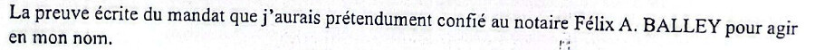
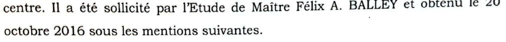

« Je jure de remplir mes fonctions avec exactitude et probité. »
Serment du notaire · article 33 du Statut du notariat

Voici ce qu'il a fait.
LE GOUFFRE
7.1 · La date de décès et l'article 438 du CGI
Ce qu'exige le texte
Déclaration de succession dans les 6 mois du décès (CGI, art. 438)
Déclaration de succession dans les 6 mois du décès (CGI, art. 438)
Décès réel : 3 décembre 2010
Date portée sur le certificat : 10 juin 2016
Date portée sur le certificat : 10 juin 2016
5 ans et 2 mois de retard (vraie date de décès)
2 mois : « dans le délai » (date du certificat)
7.2 · La qualité de « mandataire »
Ce qu'exige le texte
Un mandat écrit (art. 1984 du Code civil) ; la procuration annexée aux minutes (art. 61 du Statut)
Un mandat écrit (art. 1984 du Code civil) ; la procuration annexée aux minutes (art. 61 du Statut)

Aucun mandat produit.
Lettre de Me BALLEY, 7 septembre 2023

Mise en demeure du 28 mai 2025 : aucune réponse
Sans mandat établi : contraire à l'article 154.
7.3 · L'inscription au répertoire


Courrier de la Direction générale des impôts, 6 janvier 2025
10 août 2016 : inscrit au répertoire de l'Étude, n° 1428

Jugement du 31 octobre 2014 : près de 2 ans avant

Communiqué de La Nation, 3 avril 2013 : plus de 3 ans avant
Articles 145, 146 et 148 de l'ancien Code pénal : faux commis par un officier public.
7.4 · Le serment trahi
1 · Exactitude
La date de décès portée sur le certificat est fausse de cinq ans et demi.
La date de décès portée sur le certificat est fausse de cinq ans et demi.
2 · Probité
Une qualité de mandataire qu'aucune pièce n'établit, et qu'il contredit lui-même le 7 septembre 2023.
Une qualité de mandataire qu'aucune pièce n'établit, et qu'il contredit lui-même le 7 septembre 2023.
3 · Transparence
Gilles FÉLIHO se voit refuser la délivrance des actes, alors que le notaire dit agir en son nom.
Gilles FÉLIHO se voit refuser la délivrance des actes, alors que le notaire dit agir en son nom.
Le serment n'a pas été tenu.
Le notaire a juré l'exactitude et la probité.
Le certificat et son comportement sont contraires aux textes en vigueur.
Un gouffre entre ce qui a été juré et ce qui a été fait.
Sensibiliser.
Exiger des comptes.
Exiger des comptes.
wadagni2026-verite.com
L'analyse complète et les pièces sont en ligne
#AffaireFeliho · #Justice · #Bénin · #Vérité